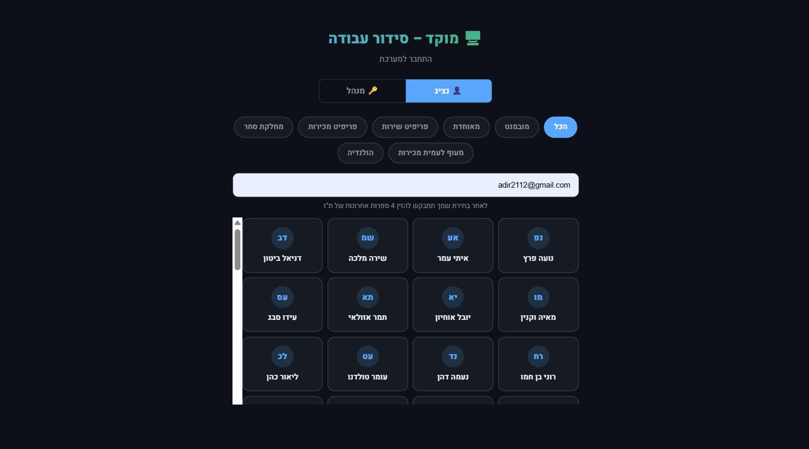

סידור עבודה בגיליון אקסל עבד טוב כל עוד היה סניף אחד. ברגע שנפתח סניף שני, ואז שלישי, המנהל מוצא את עצמו מנהל כמה גיליונות נפרדים, מנסה לזכור מי זמין איפה, ומגלה שעובד שאמור היה לכסות משמרת בסניף אחד רשום בטעות גם בסניף אחר באותה שעה.
הבעיה: מה שעבד לסניף אחד קורס עם כמה סניפים
ניהול ידני של סידור עבודה כבר דורש תשומת לב רבה לסניף בודד. כשמתווספים סניפים, הבעיה לא רק מוכפלת - היא משתנה באופיה: צריך לדעת מי יכול לעבוד באיזה סניף, למנוע כפל שיבוץ בין סניפים, ולשמור על תמונה כוללת של כל הצוות בכל המיקומים בו-זמנית. זה בדיוק המקום שבו גיליונות נפרדים מתחילים להתפרק.
הפתרון: תמונה אחת לכל הסניפים
זו בדיוק הבעיה ש-A.L Systems, בניהולו של אדיר לוי משדרות, בנתה עבורה את ShiftSync - מערכת סידור עבודה שמנהלת את כל הסניפים מתוך מערכת אחת, עם ראייה מלאה של מי זמין איפה:

- ראייה מלאה של כל הסניפים - בלי לעבור בין גיליונות נפרדים
- מניעת כפל שיבוץ - המערכת מזהה אם עובד משובץ לשתי משמרות חופפות בסניפים שונים
- שיבוץ גמיש בין סניפים - עובדים שיכולים לעבוד בכמה מיקומים משובצים לפי זמינות אמיתית
מה זה משנה בפועל
במקום לנהל כל סניף כעולם נפרד, המנהל רואה תמונה אחת מאוחדת - וזה מה שמאפשר להמשיך לגדול בלי שכל סניף נוסף יהפוך את ניהול כוח האדם למסובך יותר באופן אקספוננציאלי.
סניף אחד אפשר לנהל בראש. שלושה סניפים דורשים מערכת - אחרת משהו נופל בין הכיסאות.
למי זה הכי מתאים
לרשתות מסעדות, חנויות ועסקי שירות עם יותר מסניף אחד, שרוצים לנהל את כל כוח האדם ממקום אחד בלי לאבד שליטה ככל שהעסק מתרחב.